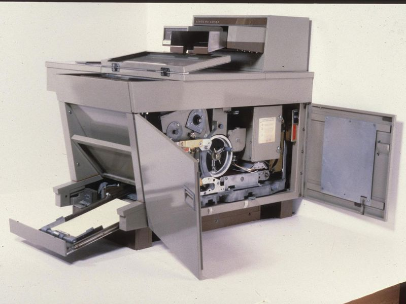
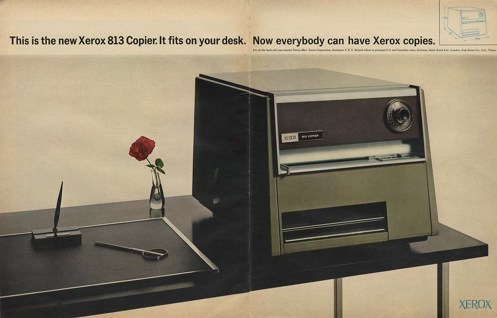
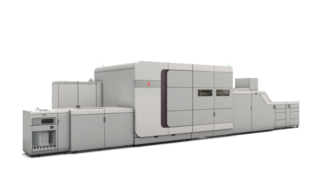

A brief history of digital printing
One day, my boss came up to me and asked, "Are you ready, Joe?" Pretty much decided I wasn't ready.
Began work at the Button Factory. This was probably the best time of my life. I had a wife, a dog, and a family.
I was just sick of Josh
I moved to Ames, Iowa and settled down into my new life.
It only took, like, two years.
Studying Aerospace Engineering.